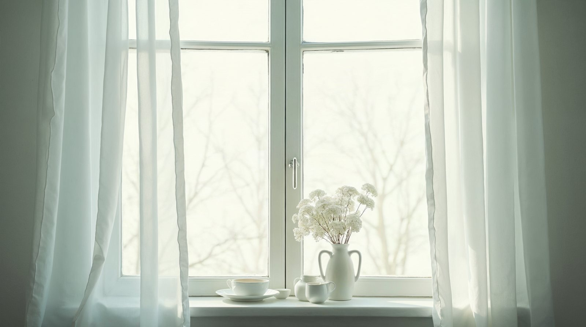
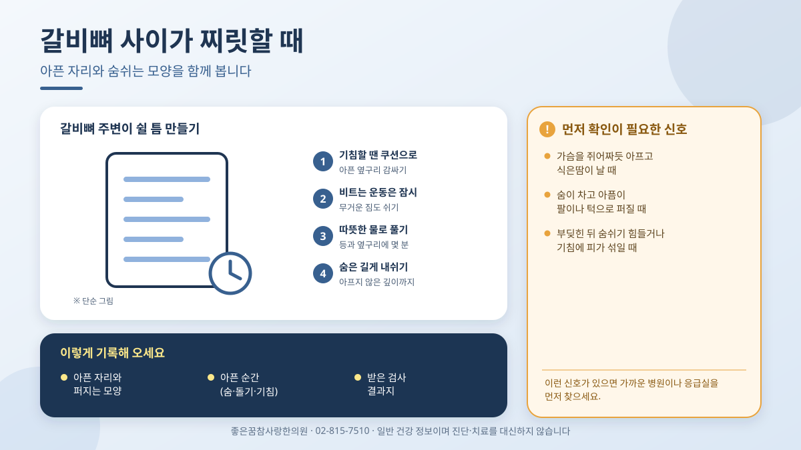

이종호 한의사 감수좋은꿈참사랑한의원 대표원장 (한의사 면허번호 19769)발행 2026-11-26 · 수정 2026-11-26
이 글의 차례
아침에 기지개를 켜려고 팔을 들고 숨을 크게 들이쉬는 순간, 옆구리 갈비뼈 사이가 칼로 긋듯 찌릿합니다. 놀라서 숨을 멈추면 사라졌다가, 재채기를 하거나 몸을 돌릴 때 다시 같은 자리가 찌릅니다. 혹시 심장이나 폐에 문제가 생긴 건 아닐까 덜컥 걱정이 됩니다.
갈비뼈 주변 통증은 진료실에서 걱정을 가장 많이 안고 오시는 통증 가운데 하나입니다. 가슴 가까운 자리가 아프니 마음이 쓰이는 것이 당연합니다. 그래서 저는 먼저 마음 놓고 이야기하실 수 있도록, 어떤 순간에 어떻게 아픈지를 천천히 여쭙는 것부터 시작합니다.
갈비뼈 사이에는 갈비뼈를 따라 둥글게 지나가는 신경과 근육이 있고, 가슴 앞쪽에는 갈비뼈와 가슴뼈를 이어 주는 연골이 있습니다. 갈비뼈 사이 신경이 예민해져 찌릿하게 아픈 것을 늑간신경통, 가슴뼈 옆 연골 부위에 염증이 생겨 누르면 아픈 것을 늑연골염이라고 부릅니다.
오늘은 갈비뼈 통증이 왜 생기는지, 늑간신경통과 늑연골염은 어떻게 다른지, 비슷한 다른 원인과는 어떻게 구분해 보는지, 그리고 생활에서 조심할 것과 한의원에서 함께 살피는 것을 차근차근 말씀드려 보겠습니다.
갈비뼈 통증은 어떤 상태인가요?
갈비뼈는 등 쪽 척추에서 시작해 옆구리를 돌아 가슴 앞쪽까지 이어지는 둥근 뼈입니다. 좌우 열두 쌍이 새장처럼 심장과 폐를 감싸고 있고, 숨을 쉴 때마다 조금씩 벌어졌다 오므라들며 움직입니다. 갈비뼈 사이사이에는 숨쉬기를 돕는 근육과 그 아래를 지나는 신경, 혈관이 있습니다.
늑간신경통은 이 갈비뼈 사이를 지나는 신경이 예민해져 생기는 통증입니다. 신경을 따라 등에서 옆구리, 가슴 앞쪽으로 띠를 두른 듯 찌릿하거나 칼로 긋는 듯 아픈 것이 특징이고, 숨을 깊게 쉬거나 몸을 비틀 때 더 심해집니다.
늑연골염은 가슴뼈 바로 옆, 갈비뼈가 연골로 바뀌어 가슴뼈와 만나는 자리에 염증이 생긴 상태입니다. 그 자리를 손가락으로 누르면 콕 아프고, 팔을 크게 움직이거나 숨을 깊게 쉬어도 불편할 수 있습니다. 주로 가슴 위쪽 두세 번째에서 다섯 번째 갈비뼈 자리에 잘 생깁니다.
왜 갈비뼈 사이가 아파질까요
갈비뼈 통증은 한 가지 이유보다 여러 계기가 겹쳐 생기는 경우가 많습니다. 진료실에서 이야기를 나누다 보면 아래와 같은 계기가 자주 나옵니다.
- 감기나 기관지염으로 기침을 몇 주씩 오래 한 뒤
- 이사, 대청소, 무거운 짐 나르기처럼 팔과 몸통을 크게 쓴 뒤
- 골프, 테니스, 수영처럼 몸통을 비트는 운동을 갑자기 많이 한 뒤
- 구부정하게 앉아 일하거나 공부하는 시간이 길어 등이 굳은 경우
- 긴장과 스트레스가 이어져 숨이 얕고 가슴이 늘 조이는 경우
- 넘어지거나 어딘가에 옆구리를 부딪친 뒤
기침은 특히 흔한 계기입니다. 한 번 기침할 때마다 갈비뼈 사이 근육은 세게 수축하는데, 이것이 하루 수백 번씩 몇 주 동안 이어지면 근육과 신경, 연골이 모두 지칠 수밖에 없습니다. 감기가 다 나은 뒤에도 갈비뼈 통증만 남았다는 분이 많은 이유입니다.
한의학에서는 옆구리와 갈비뼈 주변을 기의 흐름이 지나는 길로 보아, 긴장과 화가 쌓이거나 기혈이 한 자리에 머물면 옆구리가 결리고 찌르듯 아프다고 봅니다. 그래서 아픈 자리만이 아니라 잠, 긴장, 소화, 숨쉬는 모양을 함께 살피려고 합니다.
늑간신경통과 늑연골염은 어떻게 다른가요?
둘 다 갈비뼈 주변이 아프지만 아픈 자리와 모양이 조금 다릅니다. 처음 오시면 아래와 같이 나누어 구분해 봅니다.
- 아픈 자리: 늑간신경통은 등에서 옆구리를 따라 띠 모양으로 아픈 경우가 많습니다. 늑연골염은 가슴뼈 바로 옆 한두 군데가 아픈 경우가 많습니다.
- 아픔의 느낌: 늑간신경통은 찌릿하거나 칼로 긋는 듯, 전기가 오는 듯 아픕니다. 늑연골염은 누르면 콕 아프고 둔하게 욱신거리는 느낌입니다.
- 누를 때: 늑연골염은 그 자리를 누르면 평소의 아픔이 그대로 납니다. 늑간신경통은 갈비뼈 사이를 따라 누를 때 여러 자리가 예민할 수 있습니다.
- 붓기: 가슴뼈 옆 연골 부위가 눈에 띄게 붓는 경우는 티체 증후군이라고 따로 부르기도 합니다.
두 가지가 함께 있는 경우도 있고, 등 근육이 굳어 갈비뼈 주변까지 당김이 퍼지는 경우도 흔합니다. 그래서 가슴 앞쪽만이 아니라 등과 날개뼈 주변까지 함께 짚어 봅니다.
비슷한 다른 원인과는 어떻게 구분하나요?
갈비뼈 주변이 아플 때 가장 먼저 살펴야 할 것은 심장과 폐의 문제가 아닌지입니다. 이 부분은 아래 '먼저 확인이 필요합니다'에 정리해 두었습니다. 그 밖에도 비슷한 자리에 아픔을 만드는 원인이 몇 가지 있습니다.
- 대상포진: 한쪽 옆구리를 따라 띠 모양으로 따끔거리거나 화끈거리다가 며칠 뒤 그 자리에 물집이 올라옵니다. 물집이 보이면 피부과나 내과 진료를 먼저 받으시길 권해 드립니다.
- 갈비뼈 금: 넘어지거나 부딪힌 뒤 한 점이 몹시 아프고 기침이나 재채기에 크게 아프다면 엑스레이로 확인이 필요합니다.
- 속쓰림과 위·식도 문제: 식사와 관련해 가슴 아래가 쓰리거나 타는 듯하다면 소화기 쪽을 함께 살핍니다.
- 담석이나 간 주변 문제: 오른쪽 갈비뼈 아래가 기름진 식사 뒤 묵직하게 아프다면 내과 검사를 권해 드립니다.
근육과 신경에서 오는 갈비뼈 통증은 숨을 쉬거나 몸을 움직일 때, 그 자리를 누를 때 아픔이 달라지는 것이 흔한 특징입니다. 움직임과 상관없이 아프거나 다른 증상이 함께 있다면 다른 원인을 먼저 살펴봅니다.
집에서 스스로 살펴보는 방법
편하게 앉아 숨을 천천히 깊게 들이쉬어 보세요. 어느 깊이에서, 어느 자리가 아픈지 확인합니다. 이어서 팔짱을 끼고 몸을 좌우로 천천히 돌려 보며 어느 쪽으로 돌릴 때 아픈지도 봅니다.
가슴뼈 바로 옆을 위에서부터 한 칸씩 손가락으로 가볍게 눌러 보세요. 특정 자리에서 평소의 아픔이 그대로 난다면 기록해 두시면 좋습니다. 옆구리를 따라 갈비뼈 사이를 눌러 보며 예민한 자리가 있는지도 확인해 봅니다.
아픈 자리 피부를 거울로 한 번 살펴보시는 것도 중요합니다. 붉은 발진이나 작은 물집이 띠 모양으로 올라와 있다면 진료 전에 꼭 말씀해 주세요.
아픔이 하루 중 언제 심한지도 살펴보세요. 아침에 일어날 때 심하다면 잠자는 자세를, 오후로 갈수록 심하다면 앉아 있는 자세를 함께 돌아볼 필요가 있습니다.
먼저 이렇게 여쭙니다
처음 오시면 저는 대략 이런 순서로 여쭙니다. 미리 생각해 오시면 이야기가 훨씬 수월해집니다.
- 가장 아픈 자리는 어디인가요? 손가락으로 짚어 주세요.
- 숨을 깊게 쉴 때, 몸을 돌릴 때, 팔을 들 때, 누를 때 중 언제 아픈가요?
- 아프기 전에 기침을 오래 했거나 무리한 일, 넘어진 일이 있었나요?
- 아픔이 띠 모양으로 퍼지나요, 한 점이 아픈가요?
- 피부가 따끔거리거나 물집이 올라온 적이 있나요?
- 숨이 차거나 가슴이 조이는 느낌, 식은땀이 함께 있나요?
- 요즘 잠과 긴장, 소화는 어떠신가요?
심장이나 폐, 위장 쪽으로 받으신 검사가 있다면 결과지를 함께 가져와 주세요. 검사에서 이상이 없다는 확인을 받고 오시는 분도 많은데, 그 결과는 진료 방향을 정하는 데 큰 도움이 됩니다.
일상에서 먼저 해 볼 수 있는 것
갈비뼈 통증은 아픈 자리를 자꾸 자극하지 않으면서, 굳은 등과 가슴을 부드럽게 풀어 주는 것이 중요합니다.
- 기침이나 재채기를 할 때 쿠션이나 팔로 아픈 쪽 옆구리를 감싸 눌러 주기
- 무거운 물건 들기, 몸통을 크게 비트는 운동은 아픔이 가라앉을 때까지 쉬기
- 앉을 때 등을 등받이에 붙이고 가슴을 살짝 펴기
- 아픈 쪽을 아래로 두고 눕는 것이 불편하면 반대쪽으로 눕거나 등을 대고 눕기
- 샤워할 때 따뜻한 물을 등과 옆구리에 몇 분 대 주기
- 아프지 않은 범위에서 숨을 천천히 길게 내쉬는 연습하기
아프다고 숨을 계속 얕게 쉬면 갈비뼈 주변 근육이 더 굳을 수 있습니다. 하루 몇 번, 아프지 않은 깊이까지만 숨을 천천히 들이쉬고 길게 내쉬어 보세요. 내쉬는 숨을 들이쉬는 숨보다 조금 길게 하면 가슴과 어깨의 긴장이 함께 풀리는 것을 느끼실 수 있습니다.
기침이 계속되고 있다면 기침을 줄이는 것이 갈비뼈를 쉬게 하는 첫걸음입니다. 따뜻한 물을 자주 드시고 방이 너무 건조하지 않게 해 주세요. 기침이 몇 주 넘게 이어진다면 기침 자체도 함께 살펴보겠습니다.
긴장과 숨이 갈비뼈를 조일 때
마음이 쫓기는 날이 이어지면 숨이 얕아지고 어깨가 올라가며 가슴이 늘 조이는 느낌이 듭니다. 이런 상태가 오래가면 갈비뼈 사이 근육이 쉬지 못하고 굳어서, 작은 움직임에도 찌릿한 아픔이 생기기 쉽습니다.
진료실에서 갈비뼈 통증을 이야기하다 보면 요즘 잠을 설치거나 일이 몰려 있다는 말씀이 함께 나오는 경우가 많습니다. 그래서 저는 아픈 자리와 함께 하루의 긴장과 잠을 꼭 여쭙습니다. 몸의 긴장이 풀리면 갈비뼈 주변도 함께 느슨해지는 경우가 많기 때문입니다.
잠들기 전 5분 정도 등을 대고 누워 배에 손을 올리고, 숨을 들이쉴 때 배가 부풀고 내쉴 때 꺼지는 것을 느껴 보세요. 가슴으로만 쉬던 숨이 배까지 내려오면 갈비뼈 사이 근육이 한결 쉬기 쉬워집니다.
한의원에서 함께 살필 수 있는 경우
- 기침을 오래 한 뒤 갈비뼈 사이가 찌릿한 통증이 남은 경우
- 내과 검사에서 큰 이상은 없다고 했는데 가슴뼈 옆이 계속 아픈 경우
- 무리한 일이나 운동 뒤 옆구리와 등이 결리고 숨쉴 때 걸리는 경우
- 긴장하거나 잠을 설친 날 갈비뼈 주변이 더 조이고 아픈 경우
- 대상포진이 지나간 뒤에도 그 자리가 따끔거리는 경우
좋은꿈참사랑한의원에 오시면 먼저 심장이나 폐처럼 다른 원인을 먼저 살펴야 할 신호가 없는지부터 봅니다. 그다음 맥을 짚고, 갈비뼈 주변과 등, 가슴 앞쪽 근육을 직접 눌러 보며 아픈 자리와 숨쉬는 모양을 확인합니다.
진찰한 내용을 바탕으로 침, 약침, 부항, 온열 관리 가운데 지금 상태에 맞는 것을 고릅니다. 가슴 가까운 자리라 깊이와 방향을 신중하게 정하고, 진행 전에 미리 설명드립니다. 긴장과 잠, 기침이 함께 얽혀 있다면 한약 상담을 드리기도 하는데, 드시는 약을 먼저 확인하고 신중하게 정합니다.
내과나 피부과에서 받고 계신 진료와 약이 있다면 그대로 이어 가시면 됩니다. 처방받은 약은 처방한 선생님과 상의 없이 멈추지 마세요. 임신 중이시라면 진료 전에 먼저 알려 주시고, 필요하면 산부인과와 상의하시도록 안내합니다.
이렇게 기록해 오시면 상담이 쉬워집니다
- 가장 아픈 자리와 퍼지는 모양(몸 그림에 표시해도 좋습니다)
- 아픈 순간(숨 깊게 쉬기, 몸 돌리기, 팔 들기, 누르기, 기침)
- 아프기 시작한 때와 계기(기침, 무리한 일, 넘어짐)
- 잠과 긴장, 기침이 심했던 날 표시
- 받으신 검사 결과지와 해 본 것
일주일 정도만 적어 보셔도 충분합니다. 아픔이 심했던 날과 그날의 기침, 일, 긴장을 나란히 놓고 보면 무엇부터 돌볼지 훨씬 또렷해집니다.

숨을 편하게 쉴 수 있도록
갈비뼈 통증은 숨을 쉴 때마다 느껴져서 하루 종일 신경이 쓰이는 통증입니다. 하지만 원인을 차근차근 확인하고 갈비뼈 주변이 쉴 틈을 만들어 주면, 숨을 들이쉬는 것이 조금씩 편해지는 흐름을 보는 경우가 많습니다.
걱정이 클수록 숨은 더 얕아지고 아픔은 더 크게 느껴지기 쉽습니다. 무엇 때문에 아픈지 알고 나면 마음이 놓이면서 몸의 긴장도 함께 풀리는 경우가 많으니, 궁금한 점은 진료실에서 편하게 물어봐 주세요.
이번 주에는 기침이나 재채기를 할 때 쿠션으로 옆구리를 감싸는 습관 하나만 골라 보세요. 다음에 오시면 숨을 깊게 쉴 때 어디까지 편해졌는지 함께 확인해 보겠습니다.
이런 증상은 먼저 확인이 필요합니다
- 가슴을 쥐어짜듯 아프거나 숨이 차고 식은땀이 나며 아픔이 팔이나 턱으로 퍼지는 경우
- 넘어지거나 부딪힌 뒤 숨쉬기가 힘들어지거나 기침에 피가 섞여 나오는 경우
이런 신호가 있으면 한의원보다 가까운 병원이나 응급실을 먼저 찾으세요.
함께 읽으면 좋은 글
- 감기는 나았는데 기침만 몇 주째 남아 있을 때는 어떻게 살피나요?
- 옆구리와 등 뒤쪽이 아플 때 근육 문제인지 어떻게 구분해서 보나요?
- 가슴이 두근거리고 불안할 때는 어떤 점을 먼저 확인하나요?
- 온몸이 쑤시고 검사는 정상이라는 섬유근육통은 어떻게 살피나요?
- 근육이 아픈 것인지 관절이 아픈 것인지 어떻게 짚어서 말하나요?

여쭙는 것
- 가장 아픈 자리는 어디인가요? 손가락으로 짚어 주세요.
- 숨을 깊게 쉴 때, 몸을 돌릴 때, 팔을 들 때, 누를 때 중 언제 아픈가요?
- 아프기 전에 기침을 오래 했거나 무리한 일, 넘어진 일이 있었나요?
생활에서 해 볼 것
- 기침이나 재채기를 할 때 쿠션이나 팔로 아픈 쪽 옆구리를 감싸 눌러 주기
- 무거운 물건 들기, 몸통을 크게 비트는 운동은 아픔이 가라앉을 때까지 쉬기
- 앉을 때 등을 등받이에 붙이고 가슴을 살짝 펴기
한의원에서 함께 살필 것
- 기침을 오래 한 뒤 갈비뼈 사이가 찌릿한 통증이 남은 경우
- 내과 검사에서 큰 이상은 없다고 했는데 가슴뼈 옆이 계속 아픈 경우
- 무리한 일이나 운동 뒤 옆구리와 등이 결리고 숨쉴 때 걸리는 경우
먼저 확인이 필요한 신호
- 가슴을 쥐어짜듯 아프거나 숨이 차고 식은땀이 나며 아픔이 팔이나 턱으로 퍼지는 경우
- 넘어지거나 부딪힌 뒤 숨쉬기가 힘들어지거나 기침에 피가 섞여 나오는 경우
한눈에 보는 표
| 구분 | 핵심 |
|---|---|
| 여쭙는 것 | 가장 아픈 자리는 어디인가요? 손가락으로 짚어 주세요. 숨을 깊게 쉴 때, 몸을 돌릴 때, 팔을 들 때, 누를 때 중 언제 아픈가요? |
| 생활에서 해 볼 것 | 기침이나 재채기를 할 때 쿠션이나 팔로 아픈 쪽 옆구리를 감싸 눌러 주기 무거운 물건 들기, 몸통을 크게 비트는 운동은 아픔이 가라앉을 때까지 쉬기 |
| 한의원에서 함께 살필 것 | 기침을 오래 한 뒤 갈비뼈 사이가 찌릿한 통증이 남은 경우 내과 검사에서 큰 이상은 없다고 했는데 가슴뼈 옆이 계속 아픈 경우 |
| 먼저 확인이 필요한 신호 | 가슴을 쥐어짜듯 아프거나 숨이 차고 식은땀이 나며 아픔이 팔이나 턱으로 퍼지는 경우 넘어지거나 부딪힌 뒤 숨쉬기가 힘들어지거나 기침에 피가 섞여 나오는 경우 |
자주 묻는 질문
갈비뼈가 아픈데 심장 문제일 수도 있나요?
갈비뼈 통증의 많은 경우는 근육과 신경, 연골에서 옵니다. 진료실에서는 먼저 심장이나 폐 쪽을 살펴야 할 신호가 없는지부터 확인하고, 필요하면 내과 진료를 권해 드립니다.
늑간신경통은 얼마나 오래가나요?
계기와 생활에 따라 다릅니다. 기침이나 무리한 일이 줄면 몇 주 안에 가라앉는 경우가 많지만, 긴장과 굳은 자세가 이어지면 오래가기도 해서 생활을 함께 살핍니다.
대상포진이 나은 뒤에도 따끔거리는데 진료를 받을 수 있나요?
피부과나 내과 진료와 약은 그대로 이어 가시면서 함께 살필 수 있습니다. 물집이 아직 남아 있다면 그 자리는 피해서 진료합니다.
갈비뼈 주변에 침을 놓아도 괜찮나요?
가슴 가까운 자리라서 깊이와 방향을 신중하게 정하고, 필요하면 등이나 팔처럼 이어지는 자리를 함께 씁니다. 진행 전에 미리 설명드립니다.
찜질은 어떻게 하는 게 좋나요?
오래 결리고 굳은 느낌에는 따뜻한 찜질이 편하게 느껴지는 분이 많습니다. 부딪힌 직후 붓고 열감이 있다면 처음 하루 이틀은 차게 하시는 편이 좋습니다.
좋은꿈참사랑한의원은 재진 때 지난번 이야기부터 이어서 여쭙니다. 진료시간과 예약은 오시는 길에서 확인하세요.
어디서 상담받을 수 있나요?
좋은꿈참사랑한의원은 서울 동작구 만양로2길 2 신성빌딩 3층·5층(서울 동작구 상도동, 7호선 상도역 3번 출구 근처)에 있습니다. 한의사 3명(이종호 대표원장, 조영기 수석진료원장, 정원영 진료원장)이 진료합니다. 진료시간은 평일 09:30~20:00(점심 13:00~14:00), 토·일·공휴일 09:30~15:00이며, 방문 전 전화로 확인을 권합니다. 예약은 네이버 예약, 카카오톡 상담, 전화 02-815-7510로 받습니다.
이 글은 일반적인 건강 정보이며 개인의 진단이나 치료를 대신하지 않습니다. 증상이 있거나 복용 중인 약이 있다면 진료를 통해 확인하세요. 치료 효과는 개인마다 다를 수 있습니다.
작성 기준: 일반적으로 알려져 있는 건강 정보를 참고해 정리했습니다(대표원장 감수). 증상 기록은 1~2주 동안 하루 1회, 비슷한 시간에 적어 오시면 지난 상태와 비교하기 쉽습니다.